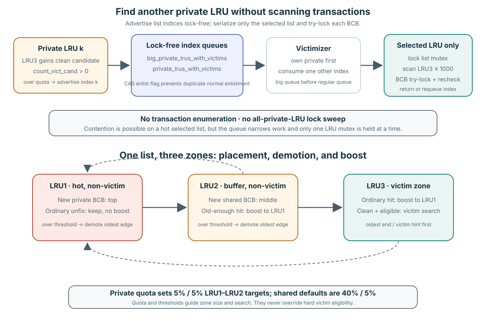

Policy finds candidates; eligibility authorizes reuse
Replacement progress decides where to search, who should flush, whether an allocator waits, and how a candidate reaches it. None of those choices weakens Lesson 7’s hard gate: stable identity, no owner/waiter conflict, no DIRTY/FLUSHING debt, and protected final revalidation.
A fast candidate hint and a direct reservation are search results—not permission to rebind a frame.
Domains contain lists; lists contain three zones

LRU3 is the victimization zone. A victim hint accelerates scanning but proves nothing about current ownership.
| Mechanism | Pinned meaning | Evidence label |
|---|---|---|
| Private versus shared LRU | Alternative resident domains; private lists carry context quota policy. | Implementation policy. |
| LRU1 / LRU2 / LRU3 | Hot, buffer/boost, and victim-search zones in this revision. | Implementation policy. |
| Quota and search order | Over-quota context searches its own list early; under-quota ownership receives protection until later fallback. | Implementation policy. |
| Victim hint/count/queue | Reduce scan work or route candidates. | Verified mechanism, never eligibility proof. |
Pinned sources: zone semantics page_buffer.c:185–200; structures 560–773; ordinary selection 9293–9538; quota policy 13942–14440.
Consume a list index; do not enumerate transactions

Candidate producers advertise integer LRU indices. A victimizer locks only the selected list, scans bounded LRU3 state, and uses BCB try-locks.
- An eligible clean LRU3 BCB increases
count_vict_cand. An over-quota private list atomically enlists its index inprivate_lrus_with_victims; quota adjustment can republish it. pgbuf_lfcq_get_victim_from_private_lru()consumesbig_private_lrus_with_victimsfirst, then the regular queue when allowed. It maps the integer directly tobuf_LRU_list[lru_idx]; the caller never walks another transaction’s object.pgbuf_get_victim_from_lru_list()locks that one LRU mutex, scans at most 1,000 LRU3 entries, and try-locks each BCB before the final safety recheck.- If candidates and quota still justify another search, the index is requeued. Otherwise its enlistment flag is cleared so a later candidate can advertise it again.
| BCB state/event | Pinned placement or movement | Quota relation |
|---|---|---|
| New private BCB, default AOUT disabled | First zero-crossing unfix inserts at LRU1 top. | Private LRU1 target is 5% of current quota. |
| New BCB without private domain | Insert at shared LRU2 middle. | Shared default LRU1/LRU2 targets are 40%/5% of shared target. |
| LRU1 ordinary unfix | Keep; do not boost an already-hot BCB. | Over-threshold oldest edge demotes to LRU2. |
| LRU2 ordinary unfix | Boost to LRU1 only when old enough. | Over-threshold oldest edge demotes to LRU3. |
| LRU3 ordinary unfix | Boost to LRU1; vacuum/direct paths have explicit exceptions. | Clean hard-eligible entries may be victimized. |
| Private page used from another private context, or hot and old enough | Remove to VOID, then add at shared LRU2 middle. | Membership moves; quota never duplicates the BCB. |
Verified mechanism and pinned policy: queue advertisement/consumption page_buffer.c:15674–15728,16370–16506; bounded list scan 9330–9538; placement/aging 6636–7040,9695–10353; quotas 14251–14511.
The allocator enters a progress loop with explicit exits

- Take invalid/free BCB: immediate reusable storage; no resident mapping needs flush or victim proof.
- Search LRUs: follow pinned private/shared/quota order; every chosen resident candidate still passes protected eligibility.
- Wait for direct victim: in server mode with a flush daemon, enqueue the allocator, wake the producer, and sleep with a bounded/interrupt-aware wait.
- Revalidate assignment: lock the assigned BCB. If a worker fixed it again, revoke the reservation and retry—normally with elevated priority.
- No daemon: during stand-alone/recovery conditions, flush synchronously and search again.
- Terminate: return a frame, retry, report interrupt/timeout, or emit explicit no-buffer error. Failure returns no page pointer.
Verified mechanism: allocation loop page_buffer.c:8181–8403; victim search order 9067–9265; direct-victim consumption/revocation 15592–15660.
Reservation loses to newly acquired ownership
A producer can reserve an eligible BCB for a waiting allocator. Between assignment and consumption, another active worker may fix the resident page. That new ownership invalidates the reservation.
| Moment | What is true | What the allocator may do |
|---|---|---|
| Producer assigns | Candidate was eligible at producer’s protected check. | Wake waiter with a reservation. |
| Worker fixes before consumption | Candidate now has ownership and is unsafe to reuse. | Mark/revoke direct assignment. |
| Allocator consumes | Protected revalidation detects invalid assignment. | Release reservation state and request another candidate. |
Forcing reuse would violate the fix contract. Retrying is not wasted correctness; it is the mechanism honoring a newer, stronger fact.
Old-generation completion cannot victimize G+1
Under pressure, victim flush can propagate copied generation G and hand the BCB toward post-flush assignment. Post-flush must recheck that the resident page is still clean, unfixed, in the victim zone, and policy-eligible.
If a writer created DIRTY generation G+1 while G was in flight, the direct-victim handoff must fail. Completing old bytes does not authorize discarding newer resident bytes.
Verified mechanism: flush handoff page_buffer.c:10925–10952; post-flush assignment 15489–15556.
Bounded exits are not starvation freedom
| Source supports | Source/runtime does not establish |
|---|---|
| Concrete search, wait, retry, timeout, interrupt, and error branches. | A bound on how many revocations/retries precede success. |
| Maintenance, page-flush, post-flush, and flush-control daemon ownership at the pinned revision. | Stable cadence, priority, batch size, or target-branch formula. |
| AOUT structures and code exist. | That current/default operation uses 2Q; pinned analyzed default forces its ratio to zero. |
| Existing workload observed reuse/counters. | Actual eviction, victim order, direct assignment, daemon timing, or fairness—it forced no physical victim. |
Trace a revoked assignment to its legal exits
Prompt
An under-quota thread needs a BCB. The invalid list is empty, all scans fail, and it waits for a direct victim. A candidate is assigned, but another worker fixes it before consumption. The next wait times out.
Your task: trace every protected decision and final result; label mechanism versus policy; then state exactly why this does not prove either infinite wait or starvation freedom.
Paste your answer into the chat. I will check eligibility/policy separation, revocation, exits, and liveness language before recording Advanced progress.
Annotate every terminal edge of allocation
Read pinned page_buffer.c:8181–8403 together with direct-victim consumption at 15592–15660. Mark success, retry, revocation, interrupt, timeout, no-daemon, and explicit-error results.